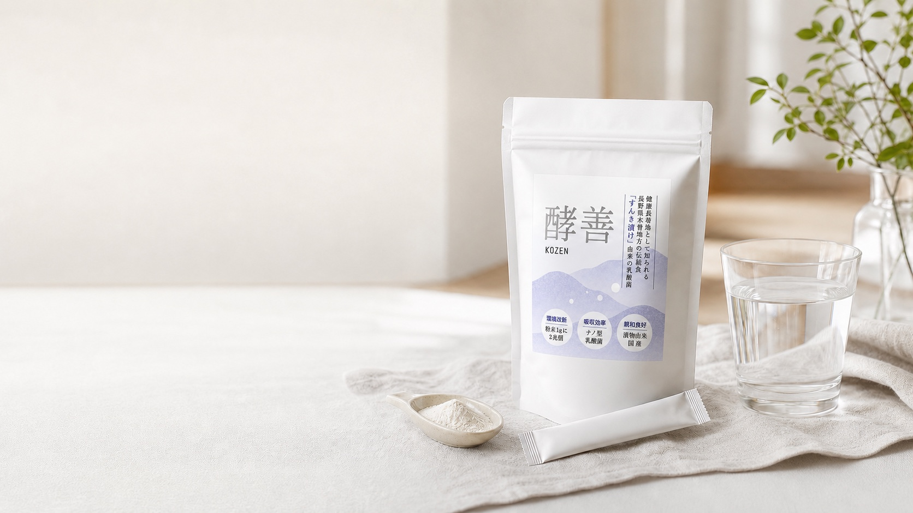
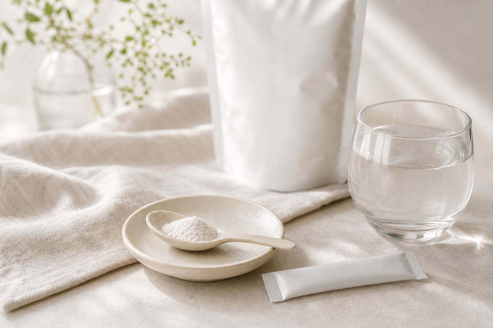
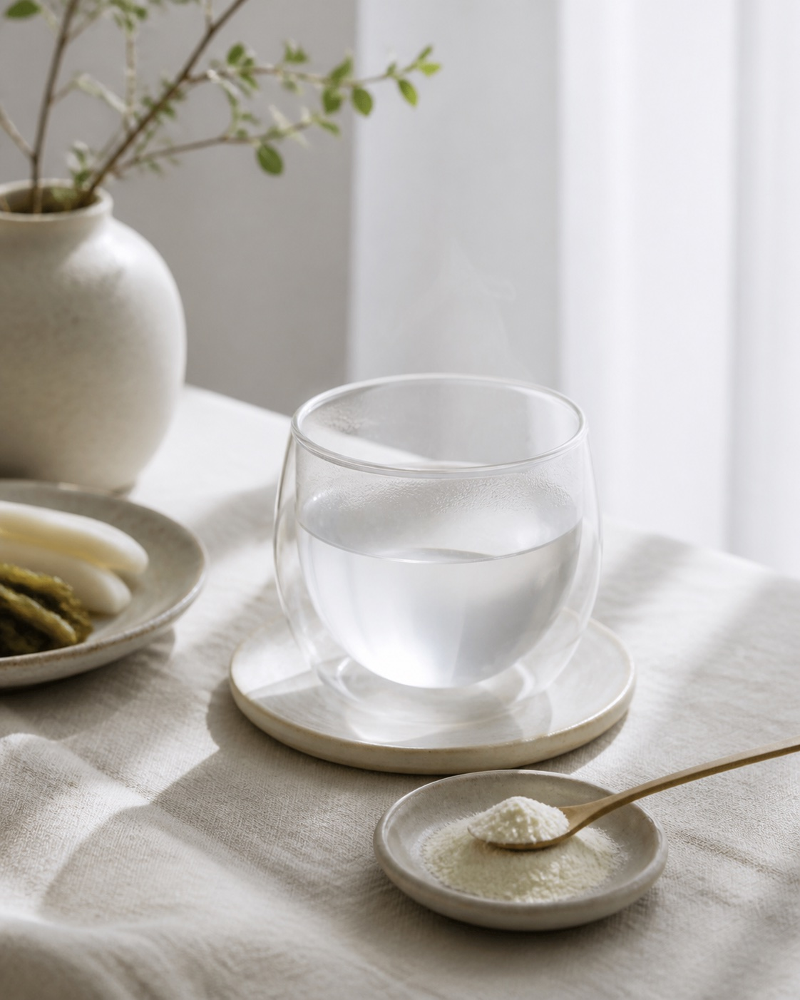
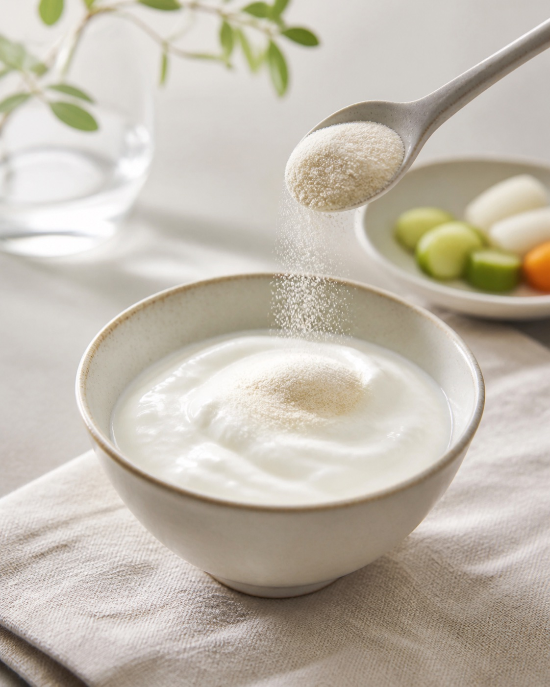
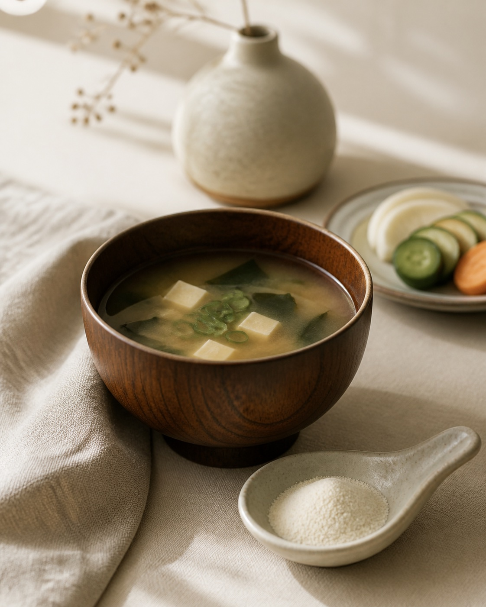
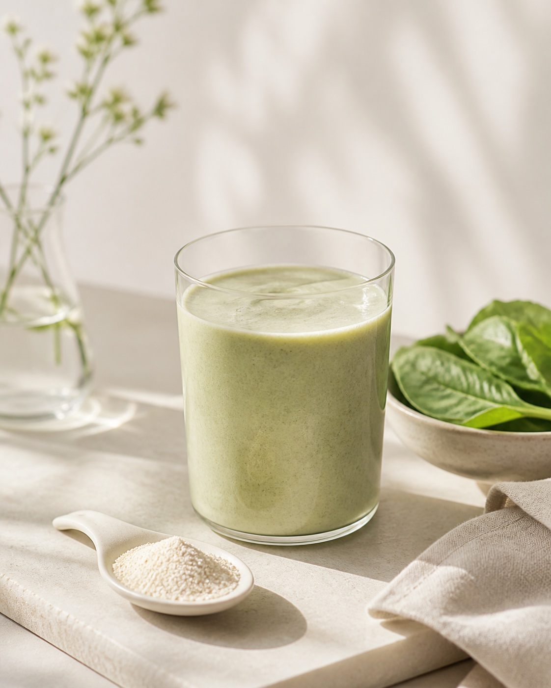
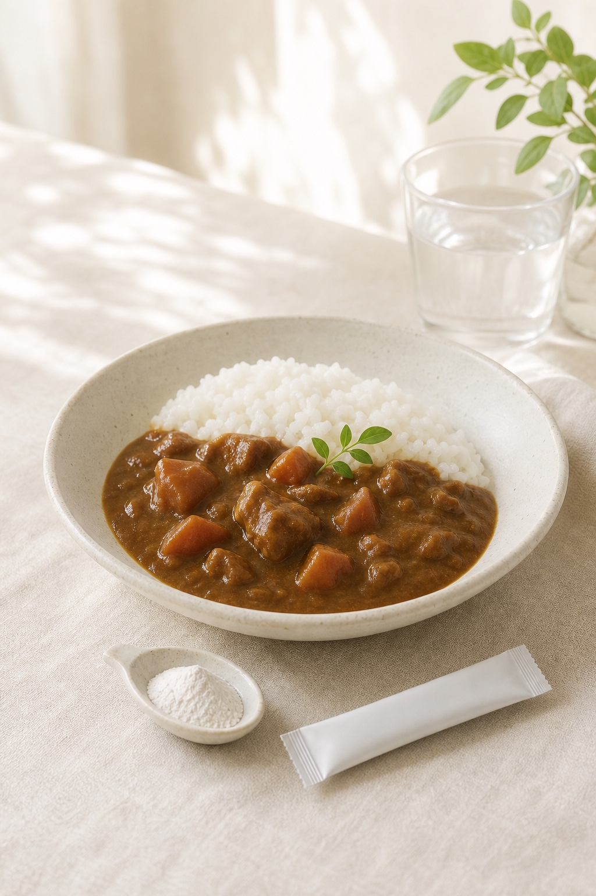
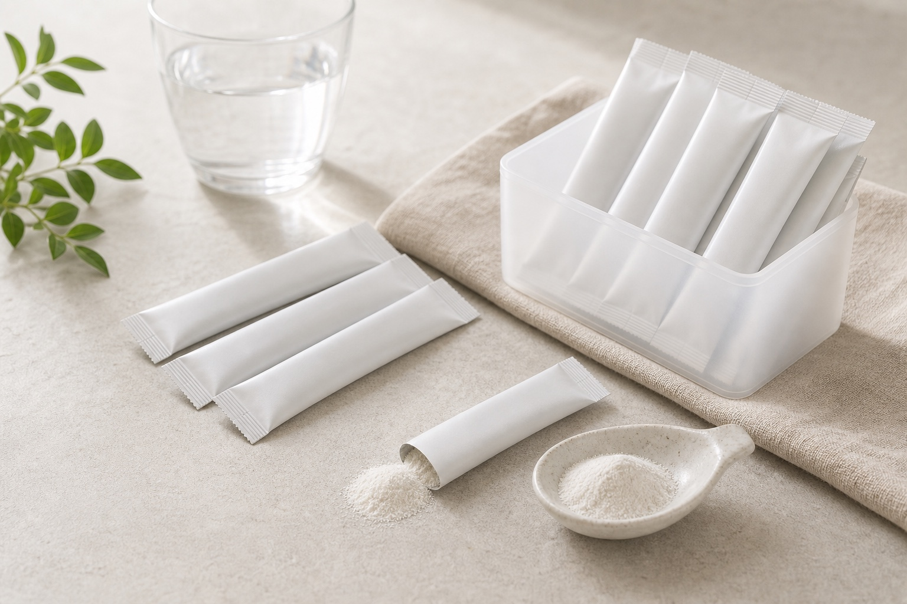

ヨーグルトを毎日用意するのは、意外と手間。

酵善 KOZEN
発酵の知恵を、毎朝1g。
すんき漬け由来のSNK12株を、 毎朝の粉末習慣に。
- SNK12株
- 殺菌乳酸菌
- 1包1g
- スティック30包
原材料・内容量・販売元情報はAmazon商品ページで確認できます。
Daily Habit
毎日の健康習慣、続けにくくありませんか。
甘味料や添加物が気になる日がある。
サプリは何が入っているのか、選ぶ理由が欲しい。
忙しい朝でも、自然なものを取り入れたい。
Brand Statement
からだに何かを足す前に、毎日の選び方を整える。
酵善は、日本の発酵文化から生まれた自然派乳酸菌ブランドです。 1包1gの粉末を、水や白湯、ヨーグルト、料理にさっと合わせるだけ。 忙しい朝にも自然になじむ、続けやすい設計です。

Ingredient
木曽の伝統発酵から生まれた、植物性ナノ型乳酸菌。
酵善に使われている植物性ナノ型乳酸菌SNKは、すんき漬け由来の Lactiplantibacillus plantarum SNK12株 を用いた殺菌乳酸菌原料です。原料情報として、菌体サイズを1μm未満に加工し、 飲料やサプリメントにも使いやすい素材として紹介されています。
長野県木曽地方に伝わる、すんき漬け由来の乳酸菌株。
日本の伝統発酵食品に着想を得た植物性素材。
原料情報では、菌体サイズを細かく加工した素材として紹介。
原料規格値に基づく、品質確認のための目安表示。
参考: IHM 植物性ナノ型乳酸菌SNK / 届出受理のお知らせ / 関連研究
Four Essentials
選ぶ理由は、素材と続けやすさに。
お漬物由来の植物性乳酸菌
日本の伝統的な発酵食品であるすんき漬け由来の乳酸菌を使用。 毎日の食生活に自然になじむ、植物性の乳酸菌原料です。
毎朝1gで続けやすい
1回分はわずか1g。水、白湯、ヨーグルト、スムージー、 味噌汁、料理に混ぜるだけ。生活リズムを崩さず取り入れられます。
余計なものを加えない設計
国産原料粉末、無添加、非遺伝子組み換え。 毎日口にするものだから、シンプルであることを大切にしました。
30包スティックで持ち運びやすい
自宅でも、職場でも、旅行先でも。 計量の手間を抑え、暮らしの中で続けやすい個包装タイプです。
How to Use
朝の一杯にも、いつもの食卓にも。
粉末タイプだから、飲み物にも料理にもさっと合わせられます。 味噌汁や温かい料理に使うときは、食べる直前など少し温度が落ち着いてからがおすすめです。

01
白湯に

02
ヨーグルトに

03
味噌汁に

04
スムージーに

05
料理に
Numbers
1包1g。毎日に取り入れやすい基本設計。
毎回の計量がいらない、続けやすい目安量。
1gあたりの乳酸菌数を、製造時換算の目安として表示。
毎日の習慣として取り入れやすい30日分。
乳酸菌数は原料規格資料に基づく目安です。最終表示は商品ラベル、原料資料、Amazon商品ページの記載と整合する形でご確認ください。
Quality
毎日口にするものだから、情報までシンプルに。
酵善は、素材の由来、原料の考え方、保管のしやすさまで、 毎日続けるものとしての納得感を大切にしています。

- 原料
- 国産原料粉末、非遺伝子組み換え。
- 設計
- 余計なものを加えない、無添加の粉末タイプ。
- 形状
- 1回分ずつ使いやすい、30包のスティック包装。
- 保管
- 直射日光、高温多湿を避けて保存。
原料資料上の確認項目
- 乳酸菌体数2兆個/g以上
- 原産地日本国
- 遺伝子組換え不使用
- 管理項目急性毒性試験 / 残留農薬試験
Value
安さではなく、日々の自己投資として。
30包、30日分。参考価格10,800円の場合、1日あたり360円。 毎朝の一杯に、自然派の乳酸菌習慣を。
FAQ
よくある質問
いつ取り入れるのがよいですか。
食品なので、決まったタイミングはありません。朝の一杯など、ご自身の暮らしの中で続けやすい時間に取り入れてください。
ヨーグルトや飲み物に混ぜられますか。
水、白湯、ヨーグルト、スムージーなどに混ぜてお召し上がりいただけます。粉末が沈む場合は、よく混ぜてください。
温かい料理に混ぜてもよいですか。
味噌汁や料理に使う場合は、食べる直前など少し温度が落ち着いてから混ぜるのがおすすめです。
味はありますか。
原料由来の穏やかな風味があります。まずは水や白湯、ヨーグルトなど、普段の食事に少量ずつ合わせてお試しください。
子どもや妊娠中の人も使えますか。
小さなお子さま、妊娠中・授乳中の方は、事前に医師や薬剤師などの専門家へご相談ください。
薬を飲んでいる場合はどうすればよいですか。
通院中、治療中、薬を服用中の方は、召し上がる前に医師や薬剤師などの専門家へご相談ください。
Amazon Presell
日本の食卓に根づいてきた発酵の知恵を、現代の朝習慣へ。
酵善 30包の詳細、原材料、価格、配送情報はAmazon商品ページでご確認ください。